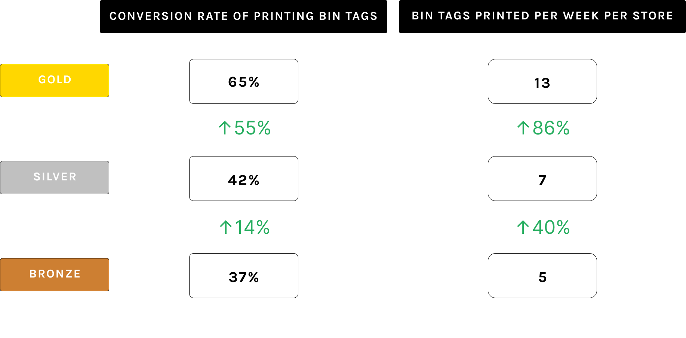

LCO Bin Tag Portal
my role
User Research
Visual Design
Product Thinking
Interaction Design
Prototyping
Visual Design
Product Thinking
Interaction Design
Prototyping
team
1 Designer (myself)
1 Product Manager
2 Developers
1 Product Manager
2 Developers
tools
Figma
Amplitude
Amplitude
duration
Sept - Dec 2020
Context
The Liquor Control Board of Ontario (LCBO) is a Crown corporation that retails alcoholic
beverages throughout Ontario.
LCBO Convenience Outlets (LCOs) are small “mom-and-pop” shops located in communities where residents do not otherwise have reasonable access to a regular LCBO store.
LCBO Convenience Outlets (LCOs) are small “mom-and-pop” shops located in communities where residents do not otherwise have reasonable access to a regular LCBO store.

Problem
Over 450 LCOs rely on LCBO's HQ Print Services to mail shelf labels (also known as bin tags)
on a monthly basis. The LCBO HQ printing shop was suddenly closing down. LCOs were
scrambling to adjust to this sudden change.
Overview
Challenges + Constraints

Solution
A portal that transforms LCOs highly manual process into a digital, self-serving printing
solution.
Impact
Launched to over 450 stores, saving staff 15% of their time updating labels.
User Research
To better understand how our LCOs currently navigate the label printing process and the
associated pain points, I conducted user interviews with 2 store owners.

Key Insights

Scoping & Prioritization
Working alongside the product manager, we devised a roadmap to iterate and deploy 3 versions of
LBT: Bronze (MVP), Silver, and Gold. Each deployment was scoped with their own feature sets
to ensure that LCOs are delivered their “must-haves” at the very least.
Not only did this approach fit within our time constraint, but it allowed for me to receive
continuous user feedback and quantitative data to validate assumptions and understand what needs to
be addressed for the upcoming version.
Designing Bronze
The Bronze Solution consisted of a search bar that retrieves results based on item
number,
name, or UPC. The user can choose a label size, click "print", and have a PDF download
onto
their device.
This solution was by no means perfect, but it satisfied the users' needs while meeting the given constraints.
This solution was by no means perfect, but it satisfied the users' needs while meeting the given constraints.

User Journey

Testing Bronze
I conducted two usability tests with two LCO store owners to understand their mental
models when approaching this tool. Many LCOs are located in rural areas meaning that
these store owners were not the most tech savvy. The usability test was a great
method to gauge the technological skills of my user demographic.
Key Insight
LCOs were concerned by the waste of paper and time required to tediously print a
separate page for an individual label. Multi-label printing (being able to select and
print multiple products on one page) was essential.

Silver
After our first deployment (Bronze), there was more time to explore more features to
alleviate our users' frustrations towards the tedious printing process.
User Flow

Search By Product

Users can still search for their desired product by entering the item number, name, or UPC.
Printing List
However, unlike Bronze, where a PDF of a single label is immediately downloaded upon
print confirmation, in Silver, when a product is selected, they are added to a Printing
List.
When the user proceeds to print, all items in the list are printed so that multiple labels are printed on a single page. After a printing session, the printing list is emptied, and will then be archived in “Print History”.
When the user proceeds to print, all items in the list are printed so that multiple labels are printed on a single page. After a printing session, the printing list is emptied, and will then be archived in “Print History”.
Rationale: The Printing List is an integral part of the multi label printing feature which
is
a must-have according to user feedback. Additionally, the way the printing list works is
similar to an online shopping cart which can be easily grasped and adopted by our users.


Print History
Print History allows you to see all of the bin tags that have printed in any past printing
session.
Rationale: Research indicated that most LCOs carry the same inventory year round. This means
LCOs will be printing the same labels for most sessions. Viewing a print history allows them
to find relevant labels easier.
Gold
Silver hit the mark with multi label printing, however, LBT didn't quite address the problem
LCOs faced in terms of how they are working around price updates. As mentioned earlier, when
LCOs couldn't receive updated labels in time, they would purchase blank labels and updated
prices themselves.
With LBT’s Silver version, LCOs were only able to print the live price of a product. To truly solve this issue, LCOs need to be able to print labels with upcoming prices ahead of time.
With LBT’s Silver version, LCOs were only able to print the live price of a product. To truly solve this issue, LCOs need to be able to print labels with upcoming prices ahead of time.
Price Update Portal

Gold implements a Price Update Portal available only to pricing
administration where they can update upcoming prices on the LBT database.
Rationale: LCOs don't want to workaround sudden price updates. By updating the LBT database
with live and upcoming prices, users can be prepared.
Error Messages
Rationale: When it comes to uploading important files like price
bulletins to a large audience of users, many issues can arise and the stakes are high. It
was essential to design for the worst case and equip users if they are faced with errors.
Confirmation Dialogue
Rationale: Price information is extremely important and submissions
cannot be reversed. For sensitive and significant tasks, I implemented lots of confirmation
touchpoints.
Quantitative Data
Guiding Design Decisions
Data collected from event tracking guided decisions throughout the entire design process.
For instance, I noticed that new users were repeatedly selecting and deselecting items from
their printing list. They were unsure if a product was successfully added to their list.
They were expecting some form of feedback to notify them that the item has been added to
their list.
I added a tooltip and badge to inform the user that the items they are selecting are being added to their list. This was something I never would've accounted for; quantitative data acts as a great indicator of our users' mental models.
Measuring Success
Quantitative data is also a great indicator of success. The product manager and I tracked
key performance indicators (conversion rates, weekly active users, activity per session,
etc.) to determine the success of LBT.

Next Steps
After four months, my internship was coming to an end. Future features were set, however not
implemented. These included:
Reflection
This project taught me how to juggle trade offs and adapt. Inevitably, not everything was
able to be included in the scope and it was up to me to know what to fight for, what to let
go of, and how to make those decisions. For instance, my original designs included an
onboarding experience and tooltips to guide users on the new platform. However, from a
development standpoint, there simply was not enough time. From there, I focused on making
tasks as straightforward as possible with thorough instructions, explicit labels, and I
opted for a PDF support guide instead.
still curious?
designed and developed by Julia Sim 2021